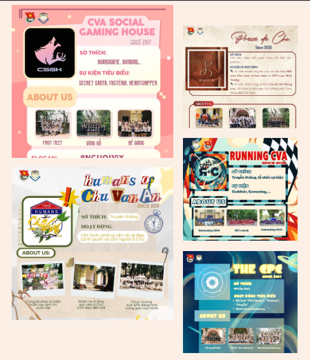
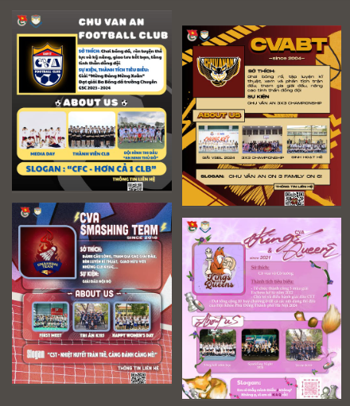
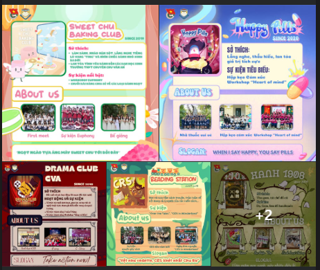

Chào mừng các bạn đến với không gian ngoại khóa Chu Văn An!
Hành trình phía trước mở ra đầy rực rỡ với vô vàn trải nghiệm đang vẫy gọi. Các em mang theo trái tim hân hoan và tinh thần cởi mở, sẵn sàng đón chào những “người bạn mới” trên chặng đường đáng nhớ. Hòa cùng nhịp bước rộn ràng của mùa tựu trường, xin giới thiệu đến các em thế giới đầy màu sắc của các câu lạc bộ trường THPT Chuyên Chu Văn An!
Trường Bưởi, mái trường trăm năm tuổi. Và ở đó, mỗi CLB mang một màu sắc riêng và để lại dấu ấn đặc biệt trong đời sống Chu Ba:
- ⭐MEDIA & EVENT :Các CLB Khối Truyền thông.
- ⭐SPORTS :Các CLB Khối Thể Thao.
- ⭐CULTURE & SOCIETY :Các CLB Khối Văn hóa-Xã hội.
- ⭐ACADEMY :Các CLB Khối Học Thuật.
KHỐI TRUYỀN THÔNG
🎥 Khối Truyền thông
Hành trình phía trước mở ra đầy rực rỡ với vô vàn trải nghiệm đang vẫy gọi, em mang theo trái tim hân hoan và tinh thần cởi mở, sẵn sàng đón chào những “người bạn mới” trên chặng đường đáng nhớ. Hòa chung nhịp bước rộn ràng của mùa tựu trường cùng lứa học trò K118, CTour giới thiệu đến các em dàn “học sinh” siêu đặc biệt đến từ khối Truyền thông của trường THPT Chuyên Chu Văn An!
 Đi tới Khối Truyền ThôngKHỐI THỂ THAO
⚽ Khối Thể thao
Nếu Truyền thông và Sự kiện mang đến nhịp sống sôi động của tuổi trẻ thì những sân chơi vận động lại mở ra một không gian nơi tinh thần thể thao thắp sáng sân đấu. Các CLB Thể thao của trường THPT Chuyên Chu Văn An chính là điểm hẹn của sức trẻ, tinh thần gắn kết và khát khao bứt phá.
 Đi tới Khối Thể ThaoKHỐI VĂN HÓA - XÃ HỘI
🎭 3. Khối Văn hoá – Xã hội
Mỗi CLB Văn hoá – Xã hội ở Chu Ba đều mang một sắc màu riêng: khơi nguồn từ trang sách, bừng sáng trên sân khấu, ngọt ngào trong chiếc bánh hay lặng lẽ gieo mầm xanh cho môi trường. Khi cùng tỏa sáng, chúng làm nên bầu trời tuổi trẻ lấp lánh, nơi mỗi ánh sao đều góp phần thắp lên sự sáng tạo, lòng đồng cảm và những kết nối vượt qua những rào cản về không gian và ngôn ngữ.
 Đi tới Khối Văn Hóa-Xã Hội📚 4. Khối Học thuật
Nối tiếp chuyến hành trình khám phá đầy mong đợi phía trước, các CLB học thuật tại Chu Ba chính thức ra mắt, mang tới muôn vàn trải nghiệm lý thú. Mỗi chặng đường là một chương mới hấp dẫn được viết nên từ những ý tưởng sáng tạo, lòng nhiệt huyết và đam mê bùng cháy, để lại bao kỉ niệm đáng nhớ trong vùng trời ký ức tuổi trẻ.
 Đi tới Khối Học Thuật
Đi tới Khối Học Thuật
Hãy cùng CTour khám phá những phần giới thiệu đặc biệt để làm quen với những người bạn mới, đồng hành trên chặng đường thanh xuân phía trước nhé!